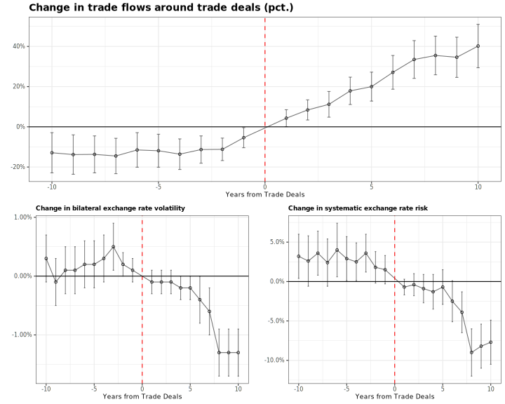

International Trade and the Risk in Bilateral Exchange Rates (with Ramin Hassan, Alexandre Pecora and Colin Ward) Journal of Financial Economics, 2025, 150:2 First version: April 2021 This version: February 2022 Download the paper Publisher version Replication Package (publisher) Replication Package (UMN mirror)
Abstract: Exchange rate volatility falls after a trade deal, driven by a decline the systematic component of risk. The average trade deal increases trade by 50 percent over 5 years, leading to a 30 percent decline in the systematic risk of exchange rate. We examine the connection between exchange rates and international trade in the light of an Armington model. The nature of trade networks determine the risk in exchange rates, and countries at the periphery benefit the most from lower trade barriers. We estimate our model to current data, and run a counterfactual experiment simulating a trade war between the U.S. and China. Our simulation shows a global increase in currency risk, with most of the effects concentrated amongst countries at the periphery of the global trade network.

Home